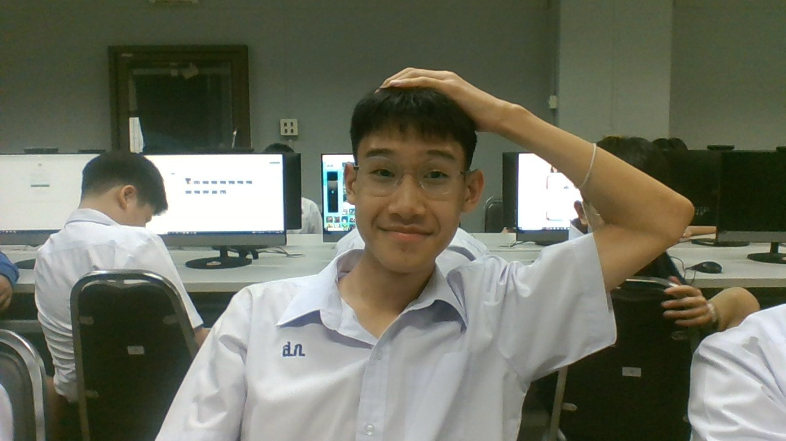

น.ส.อุมาพร พิมพ์สุตะ : ผมชอบที่ครูเล่าเรื่องไปขณะสอนนะครับ มันสนุกดี
บทเพลงที่มอบให้ครู

น.ส.ต่างเนตร พันพะม่า : ขอบคุณที่สอนภาษาจีนครั้งเเรกเเละครั้งสุดท้ายให้ผมนะครับ
บทเพลงที่มอบให้ครู
"

น.ส.วิยดา ไตรยวงค์ : ขอบคุณที่ทำให้สมองผมระเบิดด้วยการเรียนเว็ปไซต์ครับ
บทเพลงที่มอบให้ครู
"

ด.ช.วรัทธ์ นิติสาโรจน์ 208 39